Last updated: 2026-01-26
Checks: 7 0
Knit directory: yap1_meox1_paper/
This reproducible R Markdown analysis was created with workflowr (version 1.7.1). The Checks tab describes the reproducibility checks that were applied when the results were created. The Past versions tab lists the development history.
Great! Since the R Markdown file has been committed to the Git repository, you know the exact version of the code that produced these results.
Great job! The global environment was empty. Objects defined in the global environment can affect the analysis in your R Markdown file in unknown ways. For reproduciblity it’s best to always run the code in an empty environment.
The command set.seed(20260119) was run prior to running
the code in the R Markdown file. Setting a seed ensures that any results
that rely on randomness, e.g. subsampling or permutations, are
reproducible.
Great job! Recording the operating system, R version, and package versions is critical for reproducibility.
Nice! There were no cached chunks for this analysis, so you can be confident that you successfully produced the results during this run.
Great job! Using relative paths to the files within your workflowr project makes it easier to run your code on other machines.
Great! You are using Git for version control. Tracking code development and connecting the code version to the results is critical for reproducibility.
The results in this page were generated with repository version 516694a. See the Past versions tab to see a history of the changes made to the R Markdown and HTML files.
Note that you need to be careful to ensure that all relevant files for
the analysis have been committed to Git prior to generating the results
(you can use wflow_publish or
wflow_git_commit). workflowr only checks the R Markdown
file, but you know if there are other scripts or data files that it
depends on. Below is the status of the Git repository when the results
were generated:
Ignored files:
Ignored: .DS_Store
Ignored: .Rhistory
Ignored: .Rproj.user/
Ignored: code/.DS_Store
Ignored: code/pre_processing/
Ignored: data/.DS_Store
Ignored: data/genesets/
Ignored: data/input/
Ignored: output/.DS_Store
Ignored: output/analysis/
Ignored: output/data/
Ignored: renv/library/
Ignored: renv/staging/
Untracked files:
Untracked: analysis/pre_processing_combining_wildtypes_dataset_makeObject_Level02_annotation.Rmd
Untracked: code/analysis/
Unstaged changes:
Modified: analysis/index.Rmd
Modified: renv.lock
Note that any generated files, e.g. HTML, png, CSS, etc., are not included in this status report because it is ok for generated content to have uncommitted changes.
These are the previous versions of the repository in which changes were
made to the R Markdown
(analysis/pre_processing_combining_wildtypes_dataset_makeObject_Level01_annotation.Rmd)
and HTML
(docs/pre_processing_combining_wildtypes_dataset_makeObject_Level01_annotation.html)
files. If you’ve configured a remote Git repository (see
?wflow_git_remote), click on the hyperlinks in the table
below to view the files as they were in that past version.
| File | Version | Author | Date | Message |
|---|---|---|---|---|
| Rmd | 516694a | Michelle Meier | 2026-01-26 | wflow_publish(c("analysis/pre_processing_combining_wildtypes_dataset_makeObject_Level01_annotation.Rmd", |
| html | 8a28dd2 | Michelle Meier | 2026-01-26 | Build site. |
| Rmd | 65cb0b0 | Michelle Meier | 2026-01-26 | wflow_publish("analysis/pre_processing_combining_wildtypes_dataset_makeObject_Level01_annotation.Rmd") |
Combine wildtype from yap1 and meox1 experiments.
Load libraries
suppressPackageStartupMessages({
library(tidyverse)
library(here)
library(Seurat)
library(scDblFinder)
library(ggpubr)
library(clustree)
library(patchwork)
library(scater)
library(scran)
library(qs2)
library(scGate)
})From here ./pre_processing_D10025_yap1_dataset_makeObject_Level01.Rmd and here pre_processing_D10051_meox1_dataset_makeObject_Level01.Rmd. Note that each sample was processed there, e.g. QC was done on each sample separately.
Running with doublets removed:
yap1_wildtype <- qs_read(here("output/data/Samples/S20128/S20128_wildtype_Level_01.qs2"))
meox1_wildtype <- qs_read(here("output/data/Samples/S20201/S20201_wildtype_Level_01.qs2"))Add batch information.
yap1_wildtype$batch <- "yap1_experiment"
meox1_wildtype$batch <- "meox1_experiment"plot_sizing <- theme_bw()+ theme(axis.title = element_text(size = 16),
axis.text = element_text(size = 14, colour = "black"),
plot.title = element_text(size = 18),
legend.text = element_text(size = 14),
legend.title = element_blank())
plot_sizing_seurat <- theme(axis.title = element_text(size = 16),
axis.text = element_text(size = 14, colour = "black"),
plot.title = element_text(size = 18),
legend.text = element_text(size = 14))
rotate_x <- theme(axis.text.x = element_text(angle = 90, vjust = 0.5, hjust=1))
strip_fix <- theme(strip.background = element_rect(fill = "white"),
strip.text = element_text(size = 14))yap1 batch is much larger, let’s randomly downsample to match meox1 numbers
yap1_wildtype <- yap1_wildtype[, sample(colnames(yap1_wildtype), size = ncol(meox1_wildtype), replace=F)]Try to just combine
merged <- merge(yap1_wildtype,
y = meox1_wildtype,
project = "wildtype_only", merge.data = TRUE) Warning: Some cell names are duplicated across objects provided. Renaming to
enforce unique cell names.merged<- JoinLayers(merged) #seurat v5 thingsSingle-cell workflow:
Regress out %mito and batch
run_workflow_batch <- function(seurat){
seurat <- NormalizeData(seurat) %>% #should deal with basic library size differences
FindVariableFeatures() %>%
ScaleData(., vars.to.regress = c("percent.mt", "batch")) %>%
RunPCA() %>%
RunUMAP(., dims = 1:30) %>% #defaults
FindNeighbors(., dims = 1:30) %>%
FindClusters(., resolution = 0.8)
return(seurat)
}merged <- run_workflow_batch(merged)Normalizing layer: countsFinding variable features for layer countsRegressing out percent.mt, batchCentering and scaling data matrixWarning: Different features in new layer data than already exists for
scale.dataPC_ 1
Positive: cd9b, epcam, ppl, anxa1b, s100v1, cldnb, si:dkey-87o1.2, capn9, evpla, cldne
anxa3a, si:dkey-19b23.12, si:ch211-125o16.4, zgc:153284, si:ch211-157c3.4, tmsb1, spint2, pkp3a, anxa1c, f11r.1
anxa1d, spaca4l, evplb, krt4, hrc, agr1, zgc:153665, si:ch211-195b11.3, gsnb, si:ch73-347e22.8
Negative: mcamb, ldb2a, spns2, srgn, npr1a, tmem108, flt4, prcp, stab1, adgra2
si:dkey-49n23.1, grb10a, sema4c, fam102aa, loxl3b, aqp1a.1, adam12, gab2, CABZ01044099.1, nrp2b
itga9, stab2, mrc1a, si:ch211-250c4.4, prdx1, iqsec1b, igfbp1a, galnt1, prex1, plpp2a
PC_ 2
Positive: ctnna2, elavl3, aplp1, ncam1a, brsk2b, gpm6aa, ank2b, celf5a, mapk10, nrxn1a
nbeaa, si:dkey-178k16.1, adam22, kcnma1a, tuba1c, nrxn2a, nkain2, epb41a, stx1b, enox1
pbx3b, thsd7aa, celf3a, dscamb, nrxn3a, celf4, stmn1b, fgf13a, camta1b, DOCK4
Negative: anxa1b, cldne, ppl, capn9, si:ch211-157c3.4, anxa1d, evpla, si:ch211-125o16.4, anxa1c, anxa3a
agr1, zgc:153665, si:dkey-87o1.2, hrc, evplb, si:ch211-195b11.3, si:cabz01007794.1, si:ch73-347e22.8, stard14, spaca4l
si:dkey-19b23.12, capn2l, zgc:193505, elovl7a, mid1ip1a, tmem176l.4, zgc:100868, scel, s100w, icn2
PC_ 3
Positive: cldne, anxa1b, agr1, si:ch211-157c3.4, evpla, anxa1d, si:cabz01007794.1, si:ch211-125o16.4, evplb, capn9
zgc:153665, hrc, elovl7a, hsd17b12a, zgc:100868, si:ch73-347e22.8, stard14, scel, zgc:193505, anxa1c
tmem176l.4, stx11b.1, eps8l1a, dbnla, si:ch73-78o10.1, si:ch211-195b11.3, s100w, si:dkey-87o1.2, tmem45b, si:ch211-98n17.5
Negative: cldni, col4a6, col4a5, tp63, ecrg4b, col11a1a, col1a2, zgc:92380, lama5, egfl6
col1a1b, col1a1a, cldn1, ptprfa, fermt1, zgc:171775, itgb1b.1, zgc:101810, padi2, bcam
ptgs2a, col2a1b, myh9a, igfbp5b, postnb, fat2, ociad2, frem2a, epcam, zgc:86896
PC_ 4
Positive: slc2a11b, slc22a7a, bscl2l, tmem130, aox5, si:dkey-251i10.2, akr1b1.1, syngr1a, zgc:153031, uraha
pts, slc2a15a, plin6, slc2a15b, cax1, gch2, CABZ01021592.1, xdh, CABZ01058222.1, oacyl
rbp4l, si:ch211-251b21.1, pax7b, paics, gpd1b, si:dkey-106n21.1, pah, aqp3a, atic, txn
Negative: iqsec1b, ldb2a, ptprga, npr1a, spns2, macf1a, grb10a, adgra2, si:dkey-49n23.1, CABZ01044099.1
ebf3a, tmem108, diaph2, adam12, foxp1b, erfl3, mcamb, pcdh1b, plecb, gab2
itga9, rxraa, ralgapa2, flt4, plpp2a, stab1, prcp, loxl3b, foxo1b, CR848683.2
PC_ 5
Positive: slc2a11b, slc22a7a, bscl2l, aox5, si:dkey-251i10.2, tmem130, CABZ01021592.1, akr1b1.1, uraha, gch2
zgc:153031, syngr1a, slc2a15a, pts, plin6, slc2a15b, cax1, xdh, CABZ01058222.1, oacyl
rbp4l, pax7b, gpd1b, si:dkey-106n21.1, si:ch211-251b21.1, pah, cx30.3, gstp1, zgc:110339, paics
Negative: laptm5, spi1b, lcp1, mpx, npsn, plek, ch25hl2, ptpn6, si:ch1073-429i10.1, coro1a
ptprc, lect2l, fcer1gl, CU499336.2, ncf1, cd7al, si:dkey-102g19.3, cpa5, wasb, si:dkey-27h10.2
plxnc1, alox5ap, abcc13, abcb9, si:dkey-185m8.2, ponzr6, fmnl1a, dhrs9, ctss2.1, aldh8a1 Warning: The default method for RunUMAP has changed from calling Python UMAP via reticulate to the R-native UWOT using the cosine metric
To use Python UMAP via reticulate, set umap.method to 'umap-learn' and metric to 'correlation'
This message will be shown once per session16:54:28 UMAP embedding parameters a = 0.9922 b = 1.11216:54:28 Read 15750 rows and found 30 numeric columns16:54:28 Using Annoy for neighbor search, n_neighbors = 3016:54:28 Building Annoy index with metric = cosine, n_trees = 500% 10 20 30 40 50 60 70 80 90 100%[----|----|----|----|----|----|----|----|----|----|**************************************************|
16:54:28 Writing NN index file to temp file /var/folders/cx/d_5b9pls2cq2mv2m5jlps271lnn8nd/T//RtmpmpcIbh/file10f0e6da2f7d0
16:54:28 Searching Annoy index using 1 thread, search_k = 3000
16:54:31 Annoy recall = 100%
16:54:31 Commencing smooth kNN distance calibration using 1 thread with target n_neighbors = 30
16:54:32 Initializing from normalized Laplacian + noise (using RSpectra)
16:54:32 Commencing optimization for 200 epochs, with 673596 positive edges
16:54:32 Using rng type: pcg
16:54:36 Optimization finished
Computing nearest neighbor graph
Computing SNNModularity Optimizer version 1.3.0 by Ludo Waltman and Nees Jan van Eck
Number of nodes: 15750
Number of edges: 581042
Running Louvain algorithm...
Maximum modularity in 10 random starts: 0.9112
Number of communities: 32
Elapsed time: 1 secondsDimPlot(merged, group.by = c("batch"), shuffle = T)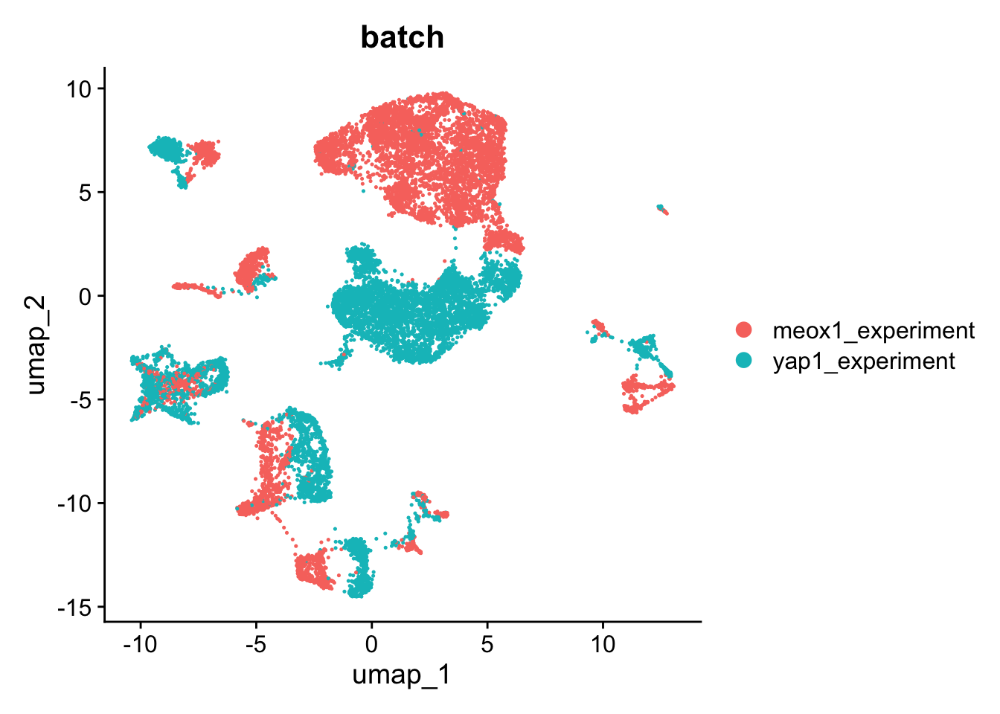
Clear batch effect.
merged <- merge(yap1_wildtype,
y = meox1_wildtype,
project = "wildtype_only", merge.data = TRUE) #don't join layers, leave then in thereWarning: Some cell names are duplicated across objects provided. Renaming to
enforce unique cell names.#run basic workflow to get PCA
merged <- NormalizeData(merged) %>%
FindVariableFeatures() %>%
ScaleData(., split.by = "batch") %>% #scale for each batch separately
RunPCA()Normalizing layer: counts.S20128Normalizing layer: counts.S20201Finding variable features for layer counts.S20128Finding variable features for layer counts.S20201Centering and scaling data matrixCentering and scaling data from split meox1_experimentCentering and scaling data from split yap1_experimentPC_ 1
Positive: cd9b, s100v1, epcam, cldnb, tmsb1, spint2, anxa1c, f11r.1, ppl, anxa3a
cfl1l, si:dkey-19b23.12, krt4, anxa1b, cldne, cdh1, capn9, si:dkey-87o1.2, si:ch211-195b11.3, krt92
zgc:153284, tuba8l2, spaca4l, gpa33a, si:ch211-157c3.4, evpla, gsnb, anxa1d, zgc:153665, si:ch211-125o16.4
Negative: plvapb, srgn, gpm6ab, aqp1a.1, si:ch211-248e11.2, sele, lyve1b, stab2, dll4, igfbp1a
bcl6b, lgmn, mrc1a, spock3, rbpms2b, clic2, esm1, fabp11a, pcdh17, rtn1a
il13ra2, glula, adgrl3.1, zgc:112332, CABZ01076275.1, selenop, cxcr4a, CABZ01030107.1, lyve1a, cyp26b1
PC_ 2
Positive: elavl3, gpm6aa, tuba1c, stmn1b, ctnna2, tuba1a, epb41a, aplp1, tox, myt1b
ank2b, ncam1a, stx1b, tmsb, mdkb, myt1a, BX465834.1, celf3a, ckbb, CU467822.2
adam22, gng3, thsd7aa, fez1, cspg5a, zfhx4, brsk2b, elavl4, pbx3b, tubb5
Negative: srgn, plvapb, sele, si:ch211-248e11.2, aqp1a.1, atp1b1a, lyve1b, tcima, stab2, eppk1
nccrp1, ifi30, arhgdig, selenop, arpc1b, mrc1a, igfbp1a, rgcc, bcl6b, clic2
zgc:162730, thy1, hbegfa, sult2st1, coro1a, lcp1, lgmn, si:ch73-335l21.4, pfn1, il13ra2
PC_ 3
Positive: laptm5, coro1a, lcp1, plek, cd7al, ptpn6, spi1b, ptprc, cebpa, wasb
mpx, CU499336.2, ch25hl2, ncf1, npsn, si:ch1073-429i10.1, mgst1.2, fmnl1a, si:dkey-185m8.2, plxnc1
fcer1gl, SMIM22, lect2l, zgc:64051, ccdc88b, fermt3a, si:dkey-102g19.3, grap2b, abcc13, cpa5
Negative: col1a2, col1a1a, col4a5, col4a6, col1a1b, cldni, col11a1a, sparc, col2a1b, postnb
tp63, ecrg4b, lama5, zgc:92380, egfl6, dcn, cldn1, col5a1, zgc:171775, fermt1
ptprfa, igfbp5b, zgc:101810, itgb1b.1, ociad2, padi2, ptgs2a, bcam, lum, col12a1b
PC_ 4
Positive: laptm5, fam49ba, coro1a, ptpn6, plek, lcp1, cd7al, spi1b, hcls1, ptprc
mpx, wasb, ch25hl2, prkcda, si:ch1073-429i10.1, CU499336.2, rac2, crip1, npsn, ncf1
pfn1, fcer1gl, si:dkey-185m8.2, plxnc1, lect2l, zgc:64051, si:dkey-102g19.3, fmnl1a, ccdc88b, cpa5
Negative: cldne, anxa1c, si:ch211-157c3.4, anxa1b, capn9, zgc:153665, anxa1d, agr1, si:ch211-125o16.4, evplb
evpla, si:ch211-195b11.3, zgc:193505, hrc, si:ch73-347e22.8, icn2, tmem176l.4, stard14, si:cabz01007794.1, elovl7a
zgc:100868, scel, hsd17b12a, si:dkey-87o1.2, stx11b.1, dbnla, ppl, anxa3a, eps8l1a, plvapb
PC_ 5
Positive: slc22a7a, akr1b1.1, si:dkey-251i10.2, slc2a11b, tmem130, uraha, bscl2l, gch2, CABZ01021592.1, aox5
zgc:153031, paics, gpd1b, rbp4l, pts, gstp1, si:ch211-251b21.1, oacyl, slc2a15a, atic
syngr1a, plin6, qdpra, pah, zgc:110339, impdh1b, slc2a15b, gpr143, pax7b, aqp3a
Negative: si:ch211-222l21.1, plvapb, zgc:153409, mki67, hist1h4l.11, atp1b1a, top2a, hist1h4l.6, pcna, zgc:110425
stmn1a, si:ch73-281n10.2, fosab, hist1h4l.16, si:dkey-108k21.10, cenpf, cdk1, tpx2, srgn, arhgdig
dll4, nusap1, ube2c, pcdh17, bcl6b, si:ch73-335l21.4, aspm, si:ch211-248e11.2, tcima, dnmt3bb.1 merged <- IntegrateLayers(object = merged, method = HarmonyIntegration, orig.reduction = "pca",
new.reduction = 'harmony', verbose = FALSE)The `features` argument is ignored by `HarmonyIntegration`.
This message is displayed once per session.Run workflow:
merged <- RunUMAP(merged, dims = 1:30, reduction = "harmony") %>% #defaults
FindNeighbors(., dims = 1:30, reduction = "harmony") %>%
FindClusters(., resolution = seq(0.1, 1, 0.1), reduction = "harmony")16:54:58 UMAP embedding parameters a = 0.9922 b = 1.11216:54:58 Read 15750 rows and found 30 numeric columns16:54:58 Using Annoy for neighbor search, n_neighbors = 3016:54:58 Building Annoy index with metric = cosine, n_trees = 500% 10 20 30 40 50 60 70 80 90 100%[----|----|----|----|----|----|----|----|----|----|**************************************************|
16:54:59 Writing NN index file to temp file /var/folders/cx/d_5b9pls2cq2mv2m5jlps271lnn8nd/T//RtmpmpcIbh/file10f0e20fd5ce
16:54:59 Searching Annoy index using 1 thread, search_k = 3000
16:55:01 Annoy recall = 100%
16:55:02 Commencing smooth kNN distance calibration using 1 thread with target n_neighbors = 30
16:55:02 Initializing from normalized Laplacian + noise (using RSpectra)
16:55:03 Commencing optimization for 200 epochs, with 695896 positive edges
16:55:03 Using rng type: pcg
16:55:07 Optimization finished
Computing nearest neighbor graph
Computing SNNWarning: The following arguments are not used: reduction
Warning: The following arguments are not used: reductionModularity Optimizer version 1.3.0 by Ludo Waltman and Nees Jan van Eck
Number of nodes: 15750
Number of edges: 616107
Running Louvain algorithm...
Maximum modularity in 10 random starts: 0.9673
Number of communities: 11
Elapsed time: 1 seconds
Modularity Optimizer version 1.3.0 by Ludo Waltman and Nees Jan van Eck
Number of nodes: 15750
Number of edges: 616107
Running Louvain algorithm...
Maximum modularity in 10 random starts: 0.9522
Number of communities: 16
Elapsed time: 1 seconds
Modularity Optimizer version 1.3.0 by Ludo Waltman and Nees Jan van Eck
Number of nodes: 15750
Number of edges: 616107
Running Louvain algorithm...
Maximum modularity in 10 random starts: 0.9419
Number of communities: 17
Elapsed time: 1 seconds
Modularity Optimizer version 1.3.0 by Ludo Waltman and Nees Jan van Eck
Number of nodes: 15750
Number of edges: 616107
Running Louvain algorithm...
Maximum modularity in 10 random starts: 0.9321
Number of communities: 18
Elapsed time: 1 seconds
Modularity Optimizer version 1.3.0 by Ludo Waltman and Nees Jan van Eck
Number of nodes: 15750
Number of edges: 616107
Running Louvain algorithm...
Maximum modularity in 10 random starts: 0.9224
Number of communities: 19
Elapsed time: 1 seconds
Modularity Optimizer version 1.3.0 by Ludo Waltman and Nees Jan van Eck
Number of nodes: 15750
Number of edges: 616107
Running Louvain algorithm...
Maximum modularity in 10 random starts: 0.9152
Number of communities: 24
Elapsed time: 1 seconds
Modularity Optimizer version 1.3.0 by Ludo Waltman and Nees Jan van Eck
Number of nodes: 15750
Number of edges: 616107
Running Louvain algorithm...
Maximum modularity in 10 random starts: 0.9089
Number of communities: 25
Elapsed time: 1 seconds
Modularity Optimizer version 1.3.0 by Ludo Waltman and Nees Jan van Eck
Number of nodes: 15750
Number of edges: 616107
Running Louvain algorithm...
Maximum modularity in 10 random starts: 0.9020
Number of communities: 27
Elapsed time: 1 seconds
Modularity Optimizer version 1.3.0 by Ludo Waltman and Nees Jan van Eck
Number of nodes: 15750
Number of edges: 616107
Running Louvain algorithm...
Maximum modularity in 10 random starts: 0.8958
Number of communities: 28
Elapsed time: 1 seconds
Modularity Optimizer version 1.3.0 by Ludo Waltman and Nees Jan van Eck
Number of nodes: 15750
Number of edges: 616107
Running Louvain algorithm...
Maximum modularity in 10 random starts: 0.8903
Number of communities: 29
Elapsed time: 1 secondsrun_harmony_correlations <- function(seurat){
plot_list <- list()
meta <- seurat@meta.data %>%
mutate(., log10ncount = log10(nCount_RNA),
log10nfeat = log10(nFeature_RNA)) %>%
select(., log10ncount, log10nfeat) %>%
rownames_to_column("Barcode") %>%
full_join(., seurat@reductions$harmony@cell.embeddings %>% as.data.frame() %>% rownames_to_column("Barcode") %>% select(., Barcode, harmony_1, harmony_2, harmony_3))
#ncount
plot_list[[1]] <- ggscatter(meta, x = "harmony_1", y = "log10ncount",
add = "reg.line",
conf.int = TRUE,
add.params = list(color = "red4",
fill = "lightgray")) +
plot_sizing + ylab("log10(nCount)") + xlab("harmony_1") +
stat_cor(method = "pearson", size = 5, colour = "red4") +
ggtitle(sprintf("Harmony1 vs library size, %s", seurat@project.name))
#nfeat
plot_list[[2]] <- ggscatter(meta, x = "harmony_2", y = "log10ncount",
add = "reg.line",
conf.int = TRUE,
add.params = list(color = "red4",
fill = "lightgray")) +
plot_sizing + ylab("log10(nCount)") + xlab("harmony_2") +
stat_cor(method = "pearson", size = 5, colour = "red4") +
ggtitle(sprintf("Harmony2 vs library size, %s", seurat@project.name))
#mito
plot_list[[3]] <- ggscatter(meta, x = "harmony_3", y = "log10ncount",
add = "reg.line",
conf.int = TRUE,
add.params = list(color = "red4",
fill = "lightgray")) +
plot_sizing + ylab("log10(nCount)") + xlab("harmony_3") +
stat_cor(method = "pearson", size = 5, colour = "red4") +
ggtitle(sprintf("Harmony3 vs library size, %s", seurat@project.name))
return(plot_list)
}wrap_plots(run_harmony_correlations(merged), ncol = 3)Joining with `by = join_by(Barcode)`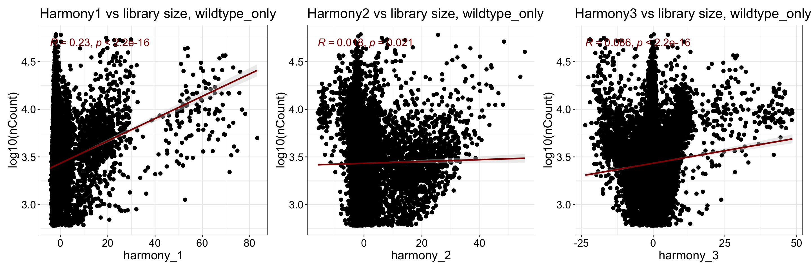
plot_umap_dataset <- function(seurat){
plot_list <- list()
plot_list[[1]] <- FeaturePlot(seurat, features = c("nCount_RNA")) + ggtitle(seurat@project.name)
plot_list[[2]] <- FeaturePlot(seurat, features = c("nFeature_RNA")) + ggtitle(seurat@project.name)
plot_list[[3]] <- DimPlot(seurat, group.by = c("seurat_clusters")) + ggtitle(seurat@project.name)
plot_list[[4]] <- DimPlot(seurat, group.by = c("batch"), shuffle = T) + ggtitle(seurat@project.name)
return(plot_list)
}wrap_plots(plot_umap_dataset(merged), ncol = 2)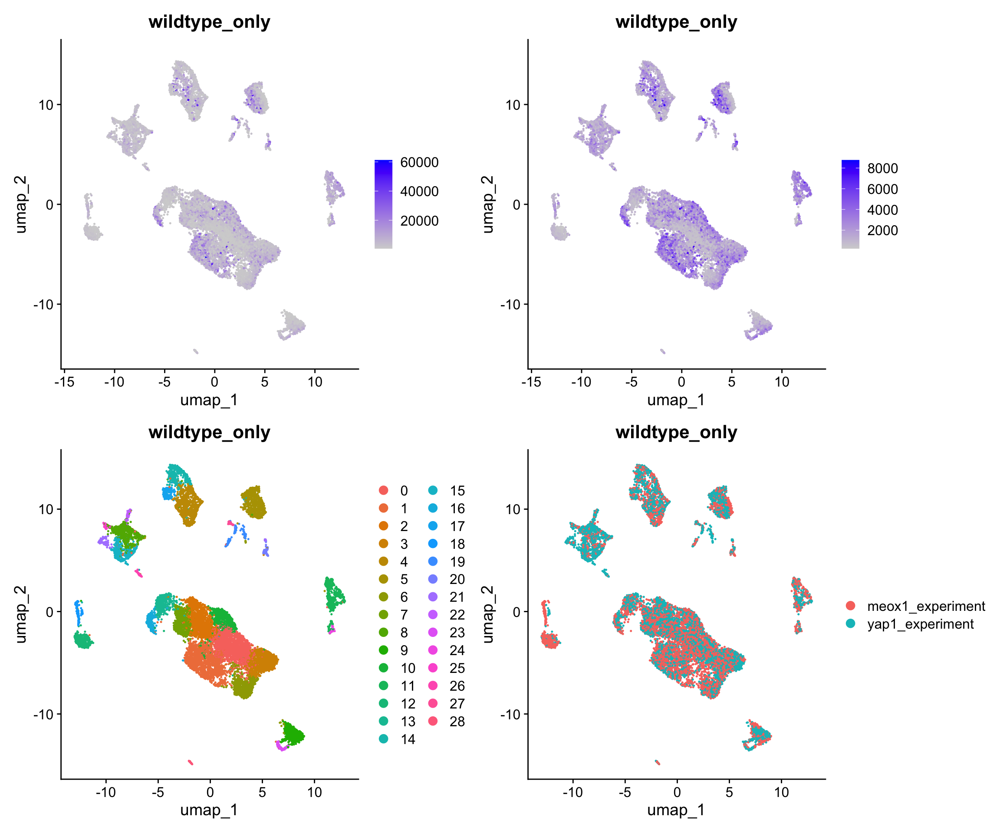
| Version | Author | Date |
|---|---|---|
| 8a28dd2 | Michelle Meier | 2026-01-26 |
plot_list <- list()
plot_list[[1]] <- merged@meta.data %>%
ggplot(., aes(y = log10(nCount_RNA), x = seurat_clusters, fill=seurat_clusters)) +
geom_boxplot() +
plot_sizing + theme(legend.position = "none")
plot_list[[2]] <- merged@meta.data %>%
ggplot(., aes(y = percent.mt, x = seurat_clusters, fill=seurat_clusters)) +
geom_boxplot() +
plot_sizing + theme(legend.position = "none")
wrap_plots(unlist(plot_list, recursive = F)) + plot_layout(axis_titles = "collect") 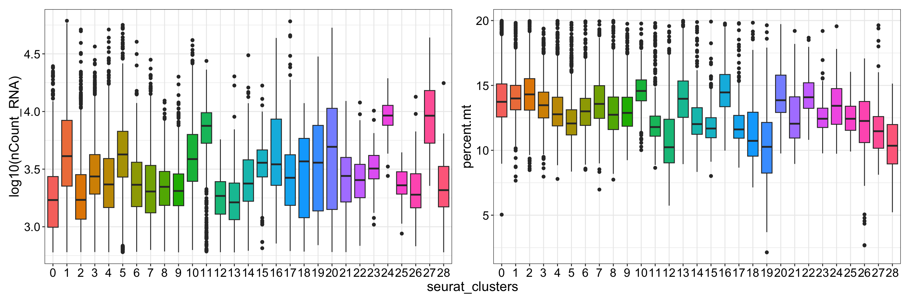
| Version | Author | Date |
|---|---|---|
| 8a28dd2 | Michelle Meier | 2026-01-26 |
clustree(merged)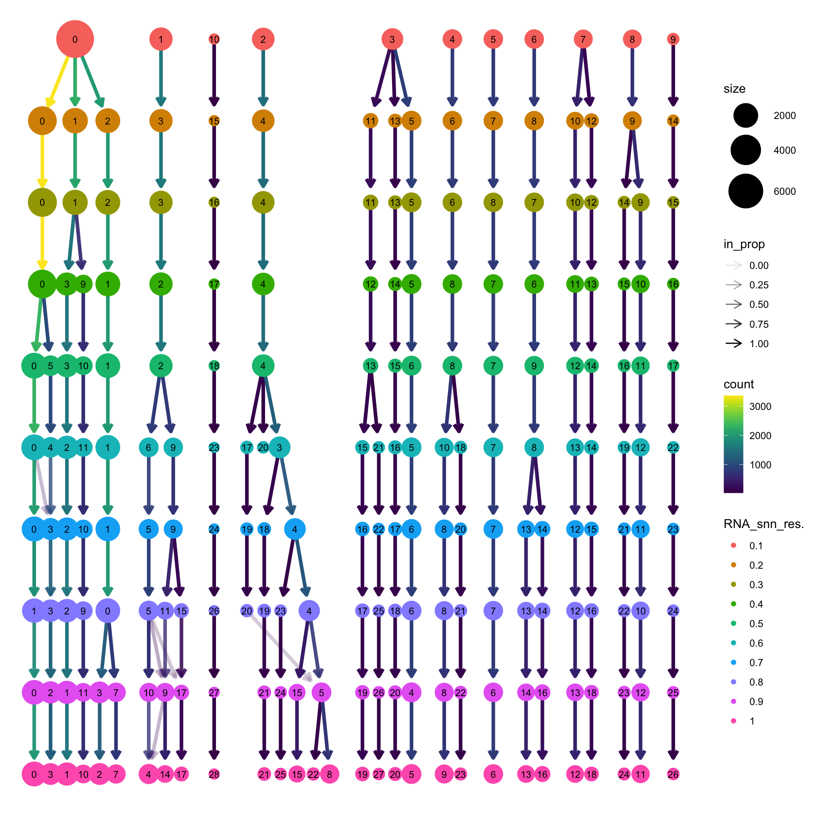
Stacked barplot for different resolutions capturing genotype split.
merged@meta.data %>%
select(., batch, starts_with("RNA")) %>%
pivot_longer(., cols = starts_with("RNA"), values_to = "cluster", names_to = "resolution") %>%
mutate(., resolution = gsub("RNA_snn_", "", resolution)) %>%
group_by(resolution, cluster, batch) %>%
summarise(., count = n()) %>%
ggplot(., aes(x= cluster, y = count, fill= batch)) +
geom_bar(position = "fill", stat = "identity") +
plot_sizing +
facet_wrap(~resolution, scales = "free_x", nrow =2) +
strip_fix `summarise()` has grouped output by 'resolution', 'cluster'. You can override
using the `.groups` argument.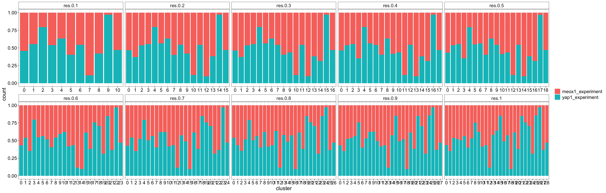
| Version | Author | Date |
|---|---|---|
| 8a28dd2 | Michelle Meier | 2026-01-26 |
endothelial_gating_model <- gating_model(name = "endothelial", signature = c("kdrl+",
"col1a1a-",
"epcam-",
"gata2b-",
"myod1-",
"gch2-",
"aox5-"))
merged <- scGate(data = merged,
model = endothelial_gating_model,
output.col.name = "is_endothlial")
### Detected a total of 11088 pure 'Target' cells (70.40% of total)pure_colours <- c("grey", "green3"); names(pure_colours) <- c("Impure", "Pure")
DimPlot(merged, group.by = "is_endothlial", cols = pure_colours)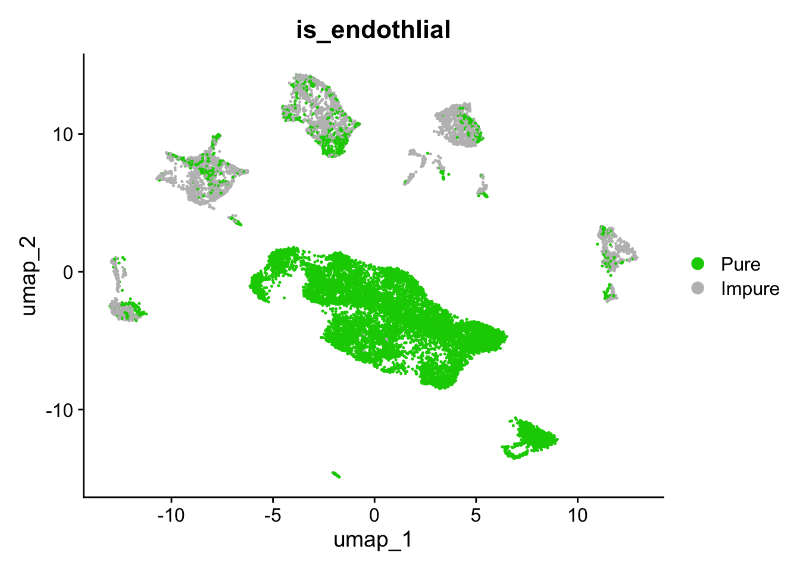
Make purity plots for res 0.2:
merged@meta.data %>%
mutate(.,RNA_snn_res.0.2 = as.factor(RNA_snn_res.0.2)) %>%
group_by(., RNA_snn_res.0.2, is_endothlial,.drop = F) %>%
summarise(., count = n()) %>%
group_by(RNA_snn_res.0.2) %>%
mutate(., RNA_snn_res.0.2_cluster_purity = count[is_endothlial == "Pure"]/sum(count)) %>%
summarise(RNA_snn_res.0.2_cluster_purity) %>% distinct() %>%
ggplot(., aes(x= reorder(RNA_snn_res.0.2, -RNA_snn_res.0.2_cluster_purity), y = RNA_snn_res.0.2_cluster_purity))+
geom_bar(stat = "identity") + plot_sizing +
ylab("Endo Purity per cluster") + xlab("cluster") `summarise()` has grouped output by 'RNA_snn_res.0.2'. You can override using
the `.groups` argument.Warning: Returning more (or less) than 1 row per `summarise()` group was deprecated in
dplyr 1.1.0.
ℹ Please use `reframe()` instead.
ℹ When switching from `summarise()` to `reframe()`, remember that `reframe()`
always returns an ungrouped data frame and adjust accordingly.
Call `lifecycle::last_lifecycle_warnings()` to see where this warning was
generated.`summarise()` has grouped output by 'RNA_snn_res.0.2'. You can override using
the `.groups` argument.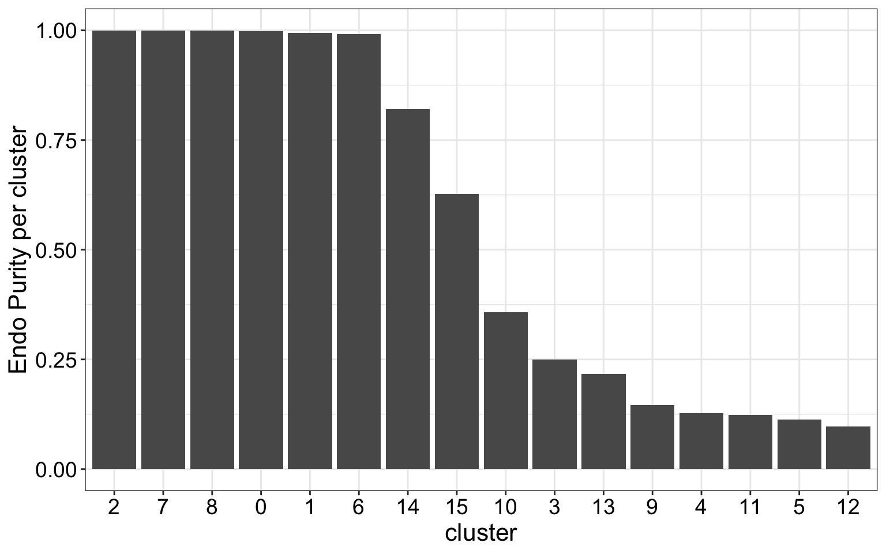
Use some known marker genes for celltypes to double check scGate annotation.
dotplot.level.01 <- c(
"cdh6",
"prox1a",
"stab2",
"lyve1b",
"mrc1a",
"flt1",
"dll4",
"esm1",
"hlx1",
"hand2",
"fn1a",
"gata2b",
"runx1",
"alas2",
"blvrb",
"spi1b",
"mpx",
"neurod4",
"nova2",
"cdh1",
"epcam",
"myod1",
"myog",
"pmela",
"dct",
"lum",
"col1a1a",
"krt4",
"cyt1",
"cryba1b",
"crybb1",
"ednrba",
"pnp4a",
"gch2",
"aox5")Make dotplot function:
run_dotplot <- function(seurat, genes, group){
DotPlot(seurat, features = genes, group.by = group) + ggtitle(group) +plot_sizing_seurat + rotate_x
}Make dotplots for all clusters
DimPlot(merged, group.by = "RNA_snn_res.0.2", label = T)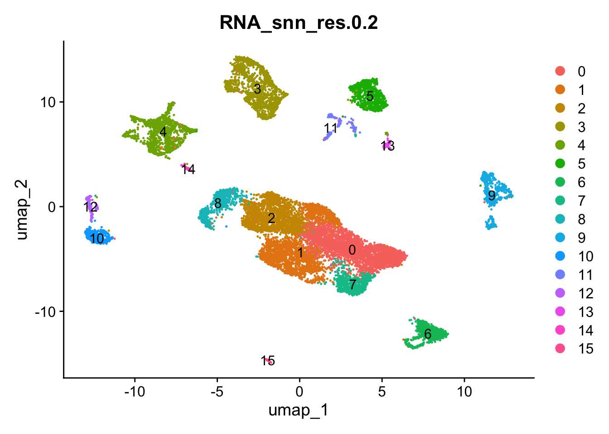
run_dotplot(merged, dotplot.level.01, group = "RNA_snn_res.0.2")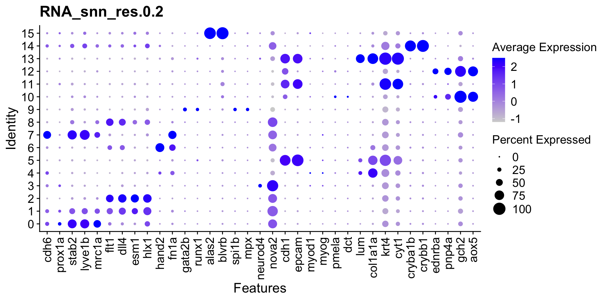
| Version | Author | Date |
|---|---|---|
| 8a28dd2 | Michelle Meier | 2026-01-26 |
Make dotplot for clusters that have mid-range purity.
run_dotplot_mid_purity <- function(seurat, genes, limits){
clusters <- seurat@meta.data %>%
mutate(.,RNA_snn_res.0.2 = as.factor(RNA_snn_res.0.2)) %>%
group_by(., RNA_snn_res.0.2, is_endothlial,.drop = F) %>%
summarise(., count = n()) %>%
group_by(RNA_snn_res.0.2) %>%
mutate(., RNA_snn_res.0.2_cluster_purity = count[is_endothlial == "Pure"]/sum(count)) %>%
summarise(RNA_snn_res.0.2_cluster_purity) %>% distinct() %>%
filter(., RNA_snn_res.0.2_cluster_purity > limits[1] & RNA_snn_res.0.2_cluster_purity < limits[2]) %>%
pull(RNA_snn_res.0.2) %>% unique()
seurat <- SetIdent(seurat, value = "RNA_snn_res.0.2")
DotPlot(seurat, features = genes, group.by = "RNA_snn_res.0.2", idents = clusters) +plot_sizing_seurat + rotate_x
}run_dotplot_mid_purity(merged, limits = c(0.2, 0.8), genes = dotplot.level.01)`summarise()` has grouped output by 'RNA_snn_res.0.2'. You can override using
the `.groups` argument.Warning: Returning more (or less) than 1 row per `summarise()` group was deprecated in
dplyr 1.1.0.
ℹ Please use `reframe()` instead.
ℹ When switching from `summarise()` to `reframe()`, remember that `reframe()`
always returns an ungrouped data frame and adjust accordingly.
Call `lifecycle::last_lifecycle_warnings()` to see where this warning was
generated.`summarise()` has grouped output by 'RNA_snn_res.0.2'. You can override using
the `.groups` argument.Warning: Scaling data with a low number of groups may produce misleading
results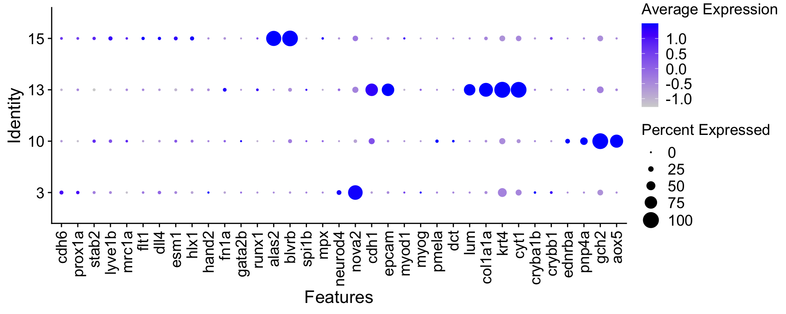
They all express other markers as well.
file_name <- here('output/data/Datsets/merged_wildtypes/merged_wildtypes_Level_01_annotated.qs2')
qs_save(merged, file_name)
sessionInfo()R version 4.5.0 (2025-04-11)
Platform: aarch64-apple-darwin20
Running under: macOS Sequoia 15.7.3
Matrix products: default
BLAS: /Library/Frameworks/R.framework/Versions/4.5-arm64/Resources/lib/libRblas.0.dylib
LAPACK: /Library/Frameworks/R.framework/Versions/4.5-arm64/Resources/lib/libRlapack.dylib; LAPACK version 3.12.1
locale:
[1] en_US.UTF-8/en_US.UTF-8/en_US.UTF-8/C/en_US.UTF-8/en_US.UTF-8
time zone: Australia/Melbourne
tzcode source: internal
attached base packages:
[1] stats4 stats graphics grDevices datasets utils methods
[8] base
other attached packages:
[1] future_1.69.0 scGate_1.7.2
[3] qs2_0.1.7 scran_1.38.0
[5] scater_1.38.0 scuttle_1.20.0
[7] patchwork_1.3.2 clustree_0.5.1
[9] ggraph_2.2.2 ggpubr_0.6.2
[11] scDblFinder_1.24.0 SingleCellExperiment_1.32.0
[13] SummarizedExperiment_1.40.0 Biobase_2.70.0
[15] GenomicRanges_1.62.1 Seqinfo_1.0.0
[17] IRanges_2.44.0 S4Vectors_0.48.0
[19] BiocGenerics_0.56.0 generics_0.1.4
[21] MatrixGenerics_1.22.0 matrixStats_1.5.0
[23] Seurat_5.4.0 SeuratObject_5.3.0
[25] sp_2.2-0 here_1.0.2
[27] lubridate_1.9.4 forcats_1.0.1
[29] stringr_1.5.1 dplyr_1.1.4
[31] purrr_1.2.1 readr_2.1.6
[33] tidyr_1.3.2 tibble_3.3.1
[35] ggplot2_4.0.1 tidyverse_2.0.0
[37] workflowr_1.7.1
loaded via a namespace (and not attached):
[1] fs_1.6.6 spatstat.sparse_3.1-0 bitops_1.0-9
[4] httr_1.4.7 RColorBrewer_1.1-3 tools_4.5.0
[7] sctransform_0.4.3 backports_1.5.0 R6_2.6.1
[10] mgcv_1.9-1 lazyeval_0.2.2 uwot_0.2.4
[13] withr_3.0.2 gridExtra_2.3 progressr_0.18.0
[16] cli_3.6.5 spatstat.explore_3.7-0 fastDummies_1.7.5
[19] labeling_0.4.3 sass_0.4.10 S7_0.2.1
[22] spatstat.data_3.1-9 ggridges_0.5.7 pbapply_1.7-4
[25] Rsamtools_2.26.0 harmony_1.2.4 parallelly_1.46.1
[28] limma_3.66.0 rstudioapi_0.17.1 BiocIO_1.20.0
[31] ica_1.0-3 spatstat.random_3.4-4 car_3.1-3
[34] Matrix_1.7-3 ggbeeswarm_0.7.3 abind_1.4-8
[37] lifecycle_1.0.4 whisker_0.4.1 yaml_2.3.10
[40] edgeR_4.8.2 carData_3.0-5 SparseArray_1.10.8
[43] Rtsne_0.17 grid_4.5.0 promises_1.5.0
[46] dqrng_0.4.1 crayon_1.5.3 miniUI_0.1.2
[49] lattice_0.22-6 beachmat_2.26.0 cowplot_1.2.0
[52] cigarillo_1.0.0 pillar_1.11.1 knitr_1.50
[55] metapod_1.18.0 rjson_0.2.23 xgboost_3.1.3.1
[58] future.apply_1.20.1 codetools_0.2-20 glue_1.8.0
[61] getPass_0.2-4 spatstat.univar_3.1-6 data.table_1.18.0
[64] vctrs_0.6.5 png_0.1-8 spam_2.11-3
[67] gtable_0.3.6 cachem_1.1.0 xfun_0.52
[70] S4Arrays_1.10.1 mime_0.13 tidygraph_1.3.1
[73] survival_3.8-3 statmod_1.5.1 bluster_1.20.0
[76] fitdistrplus_1.2-5 ROCR_1.0-11 nlme_3.1-168
[79] RcppAnnoy_0.0.23 GenomeInfoDb_1.46.2 rprojroot_2.1.1
[82] bslib_0.9.0 irlba_2.3.5.1 vipor_0.4.7
[85] KernSmooth_2.23-26 otel_0.2.0 colorspace_2.1-2
[88] UCell_2.14.0 tidyselect_1.2.1 processx_3.8.6
[91] compiler_4.5.0 curl_6.2.2 git2r_0.36.2
[94] BiocNeighbors_2.4.0 DelayedArray_0.36.0 plotly_4.11.0
[97] stringfish_0.18.0 rtracklayer_1.70.1 checkmate_2.3.3
[100] scales_1.4.0 lmtest_0.9-40 callr_3.7.6
[103] digest_0.6.37 goftest_1.2-3 spatstat.utils_3.2-1
[106] rmarkdown_2.29 RhpcBLASctl_0.23-42 XVector_0.50.0
[109] htmltools_0.5.8.1 pkgconfig_2.0.3 fastmap_1.2.0
[112] rlang_1.1.6 htmlwidgets_1.6.4 UCSC.utils_1.6.1
[115] shiny_1.12.1 farver_2.1.2 jquerylib_0.1.4
[118] zoo_1.8-15 jsonlite_2.0.0 BiocParallel_1.44.0
[121] BiocSingular_1.26.1 RCurl_1.98-1.17 magrittr_2.0.3
[124] Formula_1.2-5 dotCall64_1.2 Rcpp_1.0.14
[127] viridis_0.6.5 reticulate_1.44.1 stringi_1.8.7
[130] MASS_7.3-65 plyr_1.8.9 parallel_4.5.0
[133] listenv_0.10.0 ggrepel_0.9.6 deldir_2.0-4
[136] graphlayouts_1.2.2 Biostrings_2.78.0 splines_4.5.0
[139] tensor_1.5.1 hms_1.1.4 locfit_1.5-9.12
[142] ps_1.9.1 igraph_2.2.1 spatstat.geom_3.7-0
[145] ggsignif_0.6.4 RcppHNSW_0.6.0 reshape2_1.4.5
[148] ScaledMatrix_1.18.0 XML_3.99-0.20 evaluate_1.0.3
[151] RcppParallel_5.1.11-1 renv_1.1.4 BiocManager_1.30.27
[154] tweenr_2.0.3 tzdb_0.5.0 httpuv_1.6.16
[157] RANN_2.6.2 polyclip_1.10-7 scattermore_1.2
[160] ggforce_0.5.0 rsvd_1.0.5 broom_1.0.11
[163] xtable_1.8-4 restfulr_0.0.16 RSpectra_0.16-2
[166] rstatix_0.7.3 later_1.4.2 viridisLite_0.4.2
[169] memoise_2.0.1 beeswarm_0.4.0 GenomicAlignments_1.46.0
[172] cluster_2.1.8.1 timechange_0.3.0 globals_0.18.0